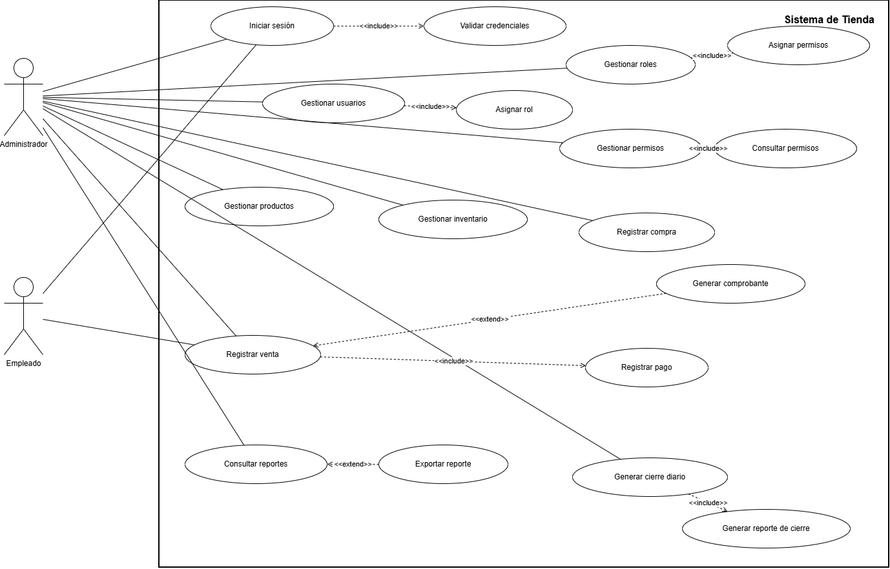
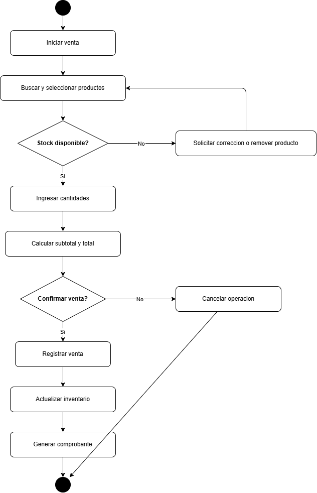
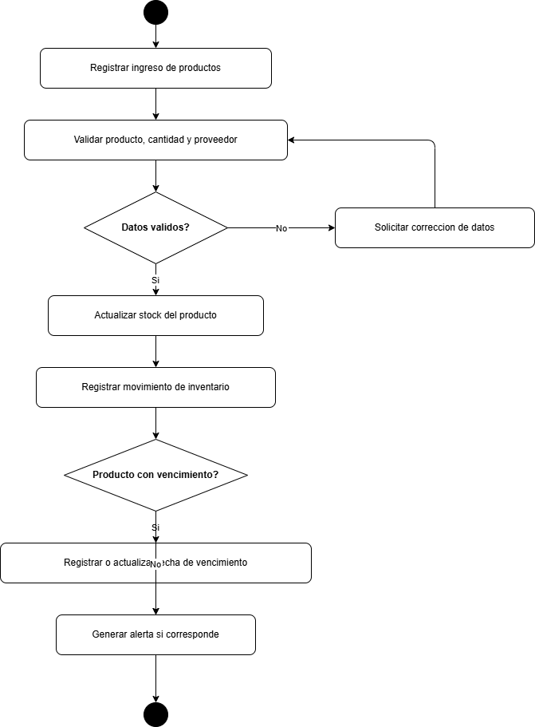
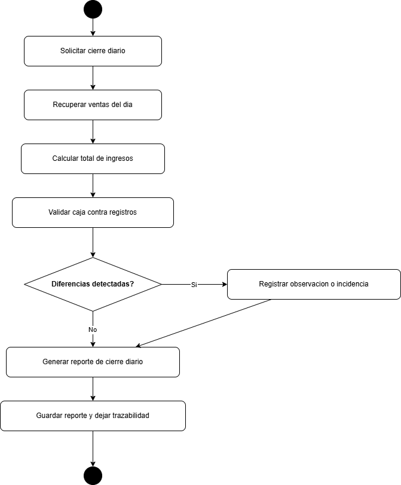

Mapa general de interacciones del sistema.
Diagramación
Se presentan diagramas exportados de Casos de Uso, actividades, modelo de datos, arquitectura y roadmap futuro, todos alineados con el análisis funcional.

Mapa general de interacciones del sistema.

Secuencia conceptual del flujo de ventas.

Control de inventario, entradas y ajustes.

Consolidación operativa del cierre diario.

Separación modular de la solución propuesta.

Ruta conceptual de crecimiento tecnológico.
Los diagramas editables de casos de uso cubren la vista general, ventas, productos-inventario-compras, reportes y cierre diario. Las relaciones principales se documentan como <<include>> para procesos obligatorios y <<extend>> para escenarios opcionales o condicionales.